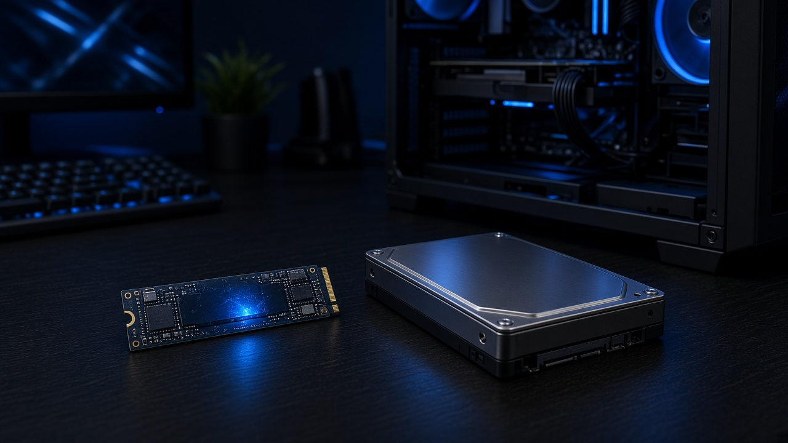
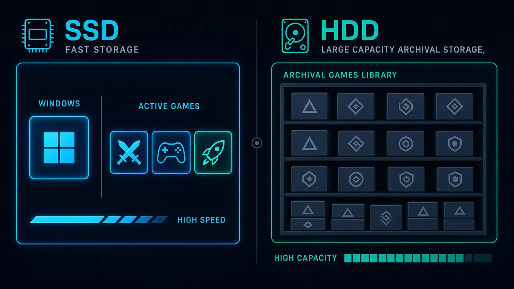

SSD или HDD для игр
SSD и HDD оба хранят установленные игры, но читают файлы по-разному. У SSD нет движущихся частей, и он открывает мелкие файлы текстур почти сразу. HDD крутит пластины и перемещает головку к нужному участку, поэтому на большом числе мелких файлов он тратит больше времени.
Игры, в которые играют сейчас, и Windows удобнее держать на SSD. HDD оставляют под фильмы, архив и игры, которые запускают редко. По опубликованным замерам переход с HDD на любой SSD сокращает загрузки сильнее, чем замена обычного SATA SSD на самый быстрый NVMe.
В требованиях всё чаще встречается пометка SSD Required или совет поставить твердотельный диск. Даже если в пункте «Место на диске» указан только объём, игра всё равно читает много мелких файлов. На HDD из-за этого дольше грузится уровень и чаще появляются паузы уже внутри него.

Чем SSD отличается от HDD
В карточке NVMe часто пишут скорость около 7000 МБ/с. Это скорость чтения одного большого файла подряд. В игре диск чаще отдаёт множество небольших фрагментов: текстуры, модели, звуки. Для такой работы важнее, как быстро он находит каждый фрагмент, а не пиковая скорость с коробки.
SATA подключают кабелем. Так устроены многие SSD формата 2,5 дюйма и обычные HDD. NVMe SSD ставится в разъём M.2 на плате. По замерам загрузок обычный SATA SSD и дорогой PCIe 5.0 часто отличаются на несколько секунд. Любой из них и HDD отличаются уже в разы.
| Параметр | SSD | HDD |
|---|---|---|
| Загрузка уровней | секунды или десятки секунд | обычно в несколько раз дольше |
| Открытый мир | текстуры и объекты подгружаются ровнее | рывки и долгое появление объектов |
| Шум | диска не слышно | гудит под нагрузкой |
| Цена за гигабайт | выше | ниже, поэтому им набирают несколько терабайт |
| В дороге | лучше переносит тряску | из-за механики чувствительнее к ударам |
| Что на нём держат | Windows и игры, в которые играют сейчас | то, что запускают редко |
Сколько длится загрузка
В опубликованных сравнениях порядок один и тот же, хотя секунды зависят от сохранения, патча и остального компьютера. Windows 11 на HDD может загружаться больше минуты, на SATA SSD около 14 секунд, на M.2 ещё немного быстрее. В играх разница обычно больше.
Ниже опубликованные замеры: секунды до готового уровня или сцены. На другом сохранении и с другим патчем числа будут другими, но HDD остаётся заметно медленнее SSD.
| Игра / сценарий | HDD | SSD SATA | SSD NVMe |
|---|---|---|---|
| Cyberpunk 2077 | ~38–63 с | ~8 с | ~6–7 с |
| Forza Horizon 5 | ~117 с | ~24 с | ~22 с |
| Kingdom Come: Deliverance II | ~237 с | ~28 с | ~27 с |
| Silent Hill f | ~38 с | ~4 с | ~3 с |
| Marvel Rivals (загрузка уровня) | ~67 с | нет замера | ~8 с |
| Ghost of Tsushima | ~14 с | ~6 с | ~6 с |
По этим замерам переход с HDD на SSD сокращает ожидание в несколько раз. Между SATA и NVMe в тех же играх разница часто составляет 1–3 секунды. Доплачивать за самый быстрый SSD ради одной секунды на экране загрузки обычно не нужно.
Бывают исключения. В отдельных играх сцена долго готовится уже после того, как файлы прочитаны, и диск перестаёт быть главной причиной ожидания. SSD всё равно сокращает само чтение, но вход в игру мгновенным не становится. Тяжёлые проекты из каталога собраны в подборке самые требовательные игры.
Паузы уже внутри уровня
Долгая загрузка до меню составляет только часть ожидания. В открытом мире игра продолжает читать данные, пока персонаж едет по городу. Если диск не успевает подгрузить дома и персонажей, появляются короткие остановки. Видеокарта в этот момент может быть загружена не полностью.
На SSD чаще ставят игры с большим миром: Cyberpunk 2077, Red Dead Redemption 2, GTA 5 и GTA Online, современные Assassin's Creed, большие симуляторы. Если в требованиях уже указан SSD, установка на HDD не совпадает с условиями, в которых разработчик проверял игру: загрузки и появление объектов будут хуже.
Игры с частыми обновлениями тоже удобнее держать на SSD. Патч на десятки гигабайт на HDD ставится дольше, дольше идёт и проверка файлов в Steam. У Counter-Strike 2 и других сетевых игр объём установки растёт с патчами, и этот запас лучше оставлять на SSD.
Когда хватает обычного SSD, а когда нужен NVMe
Для игр достаточно любого SSD: и SATA, и NVMe заметно быстрее HDD. Дальше смотрят на объём и на то, какой разъём есть на плате.
- Объём. Диск на 1–2 ТБ удобнее быстрого SSD на 256 ГБ, с которого игры приходится постоянно удалять.
- Разъём. Если на плате есть слот M.2, NVMe ставить удобнее. Гнаться за самым новым поколением PCIe для игр не нужно.
- Поколение PCIe. В загрузках игр версии 3.0, 4.0 и 5.0 почти не различаются. PCIe 5.0 быстрее копирует большие файлы, в играх прибавка обычно небольшая.
- SATA SSD. Его по-прежнему ставят в старый корпус формата 2,5 дюйма, в ноутбук или вторым диском рядом с системным NVMe.
При ограниченном бюджете важнее объём, а не скорость с коробки. Нужен запас под Windows, браузер, голосовой чат и несколько больших игр, и ещё около 15–20% свободного места.
TLC и QLC относятся к разным типам флеш-памяти. В ячейке TLC хранится 3 бита, в ячейке QLC 4 бита. При чтении игровых файлов разница обычно небольшая. QLC чаще замедляется на долгой записи: когда копируют всю библиотеку или распаковывают большой патч. За терабайт он обычно дешевле. Если диск нужен для игр и Windows и терабайты туда не копируют каждый день, подходят и TLC, и QLC среднего уровня. Маленький диск, купленный только из-за названия, заполняется быстрее.
DirectStorage относится к технологиям Windows. С ней игра забирает данные с быстрого SSD и меньше загружает процессор. На HDD толку от неё мало, потому что сам диск не успевает отдавать файлы. Поэтому в минимуме новых игр SSD указывают чаще, даже когда частоту кадров ограничивает видеокарта.
Когда HDD ещё уместен
Жёсткий диск по-прежнему нужен как дешёвое место под большой объём. Запускать с него новые большие игры неудобно из-за загрузок.
- старые и небольшие игры, у которых загрузка и так короткая;
- фильмы, резервные копии и рабочие файлы;
- игры, которые запускают раз в несколько месяцев: их можно держать на HDD и перед игрой перенести на SSD;
- компьютер, где SSD уже занят системой, а несколько терабайт нужны недорого.
На слабом компьютере HDD не компенсирует слабую видеокарту и не заменяет SSD. Если компьютер старый, перенос Windows и пары игр на SSD меняет загрузки, даже когда видеокарта остаётся прежней. Подборки под такое железо есть в играх для слабого ПК и играх для ноутбука.
Внешний диск по USB подходит для копий и переноса файлов. Постоянно запускать с него Cyberpunk или гонки с открытой картой неудобно. Даже если на коробке написано «быстрый», переходник USB и кабель добавляют задержку, а внешний жёсткий диск ещё и сильнее шумит.

Как разложить игры на SSD и HDD
Для домашнего компьютера обычно хватает такой пары:
- SSD от 1 ТБ: Windows, лаунчеры, игры этого сезона и профиль браузера;
- HDD на 2–8 ТБ: редкие игры, записи стримов, фото, образы дисков и копии сохранений.
В Steam, Epic и других лаунчерах можно выбрать папку установки на нужный диск. Всю библиотеку не обязательно держать на системном разделе только потому, что установщик выбрал его сам. Когда на SSD почти не остаётся свободного места, он начинает работать медленнее: контроллеру нужно свободное пространство, чтобы записывать данные.
На практике на SSD оставляют свободными около 10–20%. Для диска на 1 ТБ это примерно 100–200 ГБ. Современные игры часто занимают 70–150 ГБ. Объём установки указан в карточках Elden Ring, Starfield и Black Myth: Wukong.
Как узнать, на каком диске установлена игра
В Steam это видно в разделе «Хранилище»: меню ПК, затем Настройки. Тот же пункт есть в свойствах игры, во вкладке установленных файлов, кнопка «Переместить». Если на втором диске хватает места, установку можно перенести без повторной загрузки.
В Windows объём дисков открывается так: Параметры, Система, Память устройства. Там видно, сколько свободно на диске C: и на втором диске. Если игры лежат на старом HDD со скоростью 5400 оборотов в минуту, а SSD маленький и занят системой, новые игры лучше ставить после очистки или после замены диска на больший.
В ноутбуке часто один слот M.2 и один отсек на 2,5 дюйма. В слот M.2 ставят NVMe для системы и игр, а старый HDD или второй SSD оставляют под архив. Перед покупкой смотрят, какой интерфейс поддерживает ноутбук. Не каждый разъём M.2 работает на скорости с коробки SSD, но для игр эта разница редко оказывается главной.
Как читать пункт про диск в требованиях
Пункт «Место на диске» показывает только размер установки. Тип накопителя там не указан. Пометку SSD ищут в минимальных требованиях, в рекомендуемых или в примечаниях издателя.
Если SSD указан как обязательный, на HDD игра может устанавливаться очень долго, загружаться несколько минут и показывать предупреждения. В открытых локациях объекты подгружаются прямо во время игры. Когда диск не успевает, появляются рывки. Эту подгрузку иногда называют стримингом.
Если SSD указан только в рекомендуемых требованиях, запуск с HDD формально возможен, но загрузки будут дольше. Для новой игры SSD лучше закладывать до покупки, а не обнаруживать нехватку диска после установки.
Как читать минимальные и рекомендуемые требования целиком, разобрано в гайде как читать системные требования. Диск не заменяет оперативную память: при её нехватке паузы тоже появляются, но по другой причине. Это разобрано отдельно: сколько оперативной памяти нужно для игр.
Число в требованиях часто не включает кэш шейдеров, временные файлы обновления и распаковку. Если игра просит 100 ГБ, свободными лучше иметь 120–130 ГБ. Иначе установщик может остановиться, когда временным файлам не хватит места. Это практический запас, а не цифра из требований разработчика.
Что проверить перед покупкой
- Считают игры, в которые играют сейчас, плюс Windows и около 15% свободного места.
- Если слот один и выбор между SSD и HDD, берут SSD.
- Если можно поставить два диска, SSD для системы и текущих игр плюс HDD для архива обычно удобнее одного большого HDD.
- За PCIe 5.0 ради частоты кадров переплачивать не нужно. Объём важнее скорости на коробке.
- После установки тяжёлую игру переносят с HDD на SSD и сравнивают загрузку одного сохранения. Разницу обычно видно по тому, как быстро пропадает экран загрузки.
Частые ошибки
- Систему оставили на HDD, а игры поставили на SSD. Меню Windows и лаунчеры всё равно открываются медленно. Систему тоже ставят на SSD.
- На SSD не осталось свободного места. Диск начинает работать медленнее, обновлениям и кэшу некуда записаться. Место освобождают или редкие игры переносят на HDD.
- Взяли 256 ГБ с расчётом докупить позже. Windows, патчи и две большие игры заполняют его почти целиком. Для текущих игр реалистичнее начинать от 1 ТБ.
- Ждут, что SSD поднимет частоту кадров, когда её ограничивают процессор или видеокарта. Он сокращает загрузки и подгрузку объектов. Слабую видеокарту в тяжёлой сцене он не заменяет.
- Игру поставили на сетевое хранилище и запускают по Wi-Fi. Для одной библиотеки соединение непредсказуемое. Локальный SSD работает стабильнее.
Для игр последних лет SSD уже обычная часть компьютера. HDD остаётся дешёвым местом для того, что не запускают каждую неделю. Удобная схема такая: система и текущие игры на SSD, остальное на HDD.
Если есть сомнение, одну тяжёлую игру переносят с HDD на SSD и загружают то же сохранение. По этой разнице обычно понятно, нужен ли ещё один терабайт SSD или большой HDD можно оставить только под архив.
Весь каталог карточек: каталог игр. Все короткие гайды собраны в разделе Гайды.